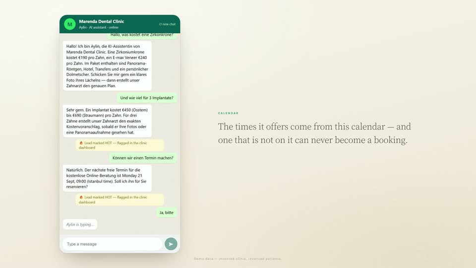
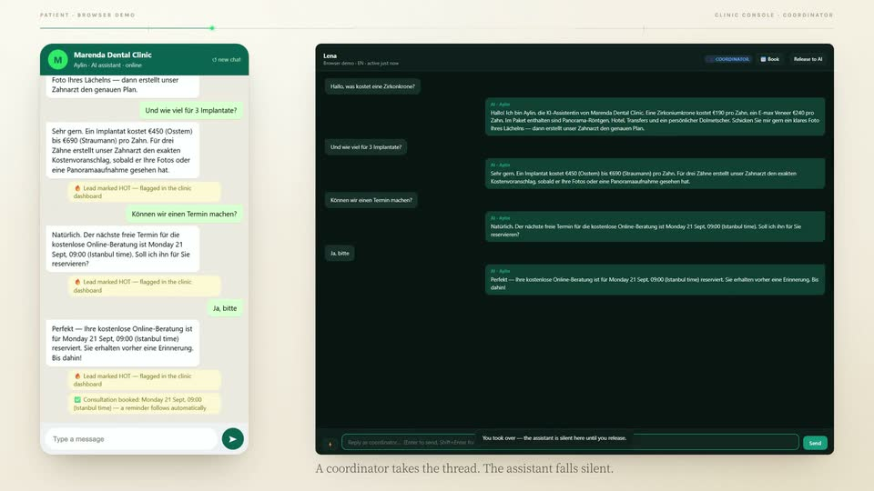
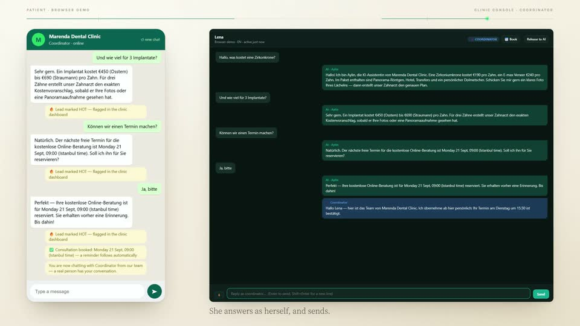

Clinic AI
A WhatsApp assistant for clinics that answers in the patient's language and books appointments — and only ever quotes prices the clinic published.
Overview
Turkish clinics sell to foreign patients over WhatsApp, where replies come late and without a price. This answers the Meta webhook in the patient's language and books against an editable weekly calendar. Every price the model writes is re-extracted against an allow-list built from the clinic's price list and FAQ; a reply carrying an unlisted figure is discarded whole, booking marker included. Seven classes of bad booking marker are rejected before an appointment exists, and a coordinator can seize a thread mid-generation — the in-flight reply is dropped at send time. Exercised end to end against a Meta test number: pilot-ready, not yet in production.
Problem and objectives
Turkish clinics sell to foreign patients over WhatsApp, where replies come late and without a price.
- Answer patients in their own language, at any hour
- Book against the clinic's own weekly calendar
- Never quote a price the clinic did not publish
Architecture
Patient
Text or a voice note, in the patient's language.
- Patient WhatsApp — Text or a voice note, in the patient's language.
- Webhook WhatsApp Cloud API · Express — Delivery runs in a per-user promise queue, before the assistant turn is committed.
- Voice worker faster-whisper, local — Voice notes transcribed on the machine, with a four-level fallback chain.
- Model Anthropic SDK — Drafts the reply and any booking marker.
- Price guard allow-list — Any figure not on the clinic's list and the whole reply is discarded, booking included.
- Booking weekly calendar — Seven classes of bad booking marker are rejected before an appointment exists.
- Operator dashboard vanilla JS · SQLite — Staff take over a thread mid-reply; the in-flight answer is dropped at send time.
Engineering challenges and decisions
- Price allow-list filter over model output, with Russian, Arabic and Turkish currency words
- Resident faster-whisper worker transcribes voice notes locally, with a four-level fallback chain
- Delivery runs inside a per-user promise queue, before the assistant turn is committed
- Operator dashboard with no front-end dependencies, no innerHTML, 8 XSS vectors asserted
Discard the reply
- The constraint
- The assistant answers foreign patients for Turkish clinics over WhatsApp, and must never quote a price it invented.
- What I rejected
- Correcting the number.
- What I did
- Every price the model writes is re-extracted against an allow-list built from the clinic's price list and FAQ; a reply carrying an unlisted figure is discarded whole, booking marker included.
- What it cost
- The patient gets a fixed "our coordinator will confirm your plan first" line instead of the answer they asked for, and the reply the model did write is discarded with it, booking included.
Technologies
Also in use: SQLite.
My contribution
Sole developer — Node backend, LLM pipeline, live operator dashboard, local voice transcription.
Screens
Stills from the demo film.



Results
- 7
- languages
- 4
- staff roles
- 8
- XSS vectors asserted against the operator dashboard
- Pilot-ready
- exercised end to end against a Meta test number; not yet in production